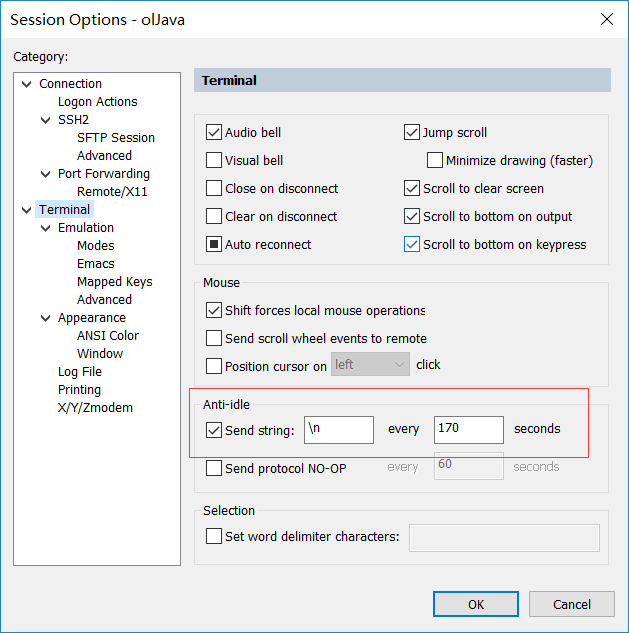

<!DOCTYPE html>
<html lang="en">
<head><meta name="generator" content="Hexo 3.9.0">
    <meta charset="utf-8">
    
    <title>
        Linux常用命令 |
        
        YingLong</title>
    
    
        <meta name="keywords" content="Linux">
    
    <meta name="viewport" content="width=device-width, initial-scale=1, maximum-scale=1">
    <meta name="description" content="source /etc/profile： 使配置文件生效ps -aux | grep java：查看进程jstat -gcutil 30996 3000 ：每3秒显示一次进程号为30996的Java进程GC情况 问题排查倒数300行并进入实时监听文件写入模式 1tail -300f shopbase.log 查看端口被那个进程占用netstatnetstat命令用来打印Linux中网络系统的状态信">
<meta name="keywords" content="Linux">
<meta property="og:type" content="article">
<meta property="og:title" content="Linux常用命令">
<meta property="og:url" content="https://yaoyinglong.github.io/Blog/杂记/Linux/Linux常用命令/index.html">
<meta property="og:site_name" content="YingLong">
<meta property="og:description" content="source /etc/profile： 使配置文件生效ps -aux | grep java：查看进程jstat -gcutil 30996 3000 ：每3秒显示一次进程号为30996的Java进程GC情况 问题排查倒数300行并进入实时监听文件写入模式 1tail -300f shopbase.log 查看端口被那个进程占用netstatnetstat命令用来打印Linux中网络系统的状态信">
<meta property="og:locale" content="en">
<meta property="og:image" content="https://yaoyinglong.github.io/images/CRT永不超时设置.png">
<meta property="og:updated_time" content="2022-08-13T12:59:13.380Z">
<meta name="twitter:card" content="summary">
<meta name="twitter:title" content="Linux常用命令">
<meta name="twitter:description" content="source /etc/profile： 使配置文件生效ps -aux | grep java：查看进程jstat -gcutil 30996 3000 ：每3秒显示一次进程号为30996的Java进程GC情况 问题排查倒数300行并进入实时监听文件写入模式 1tail -300f shopbase.log 查看端口被那个进程占用netstatnetstat命令用来打印Linux中网络系统的状态信">
<meta name="twitter:image" content="https://yaoyinglong.github.io/images/CRT永不超时设置.png">
    

    

    
        <link rel="icon" href="/favicon.ico">
    

    <link rel="stylesheet" href="/libs/font-awesome/css/font-awesome.min.css">
    <link rel="stylesheet" href="/libs/open-sans/styles.css">
    <link rel="stylesheet" href="/libs/source-code-pro/styles.css">

    <link rel="stylesheet" href="/css/style.css">
    <script src="/libs/jquery/2.1.3/jquery.min.js"></script>
    <script src="/libs/jquery/plugins/cookie/1.4.1/jquery.cookie.js"></script>
    
    
        <link rel="stylesheet" href="/libs/lightgallery/css/lightgallery.min.css">
    
    
        <link rel="stylesheet" href="/libs/justified-gallery/justifiedGallery.min.css">
    
    
    
    


</head>
</html>
<body>
<div id="container">
    <header id="header">
    <div id="header-main" class="header-inner">
        <div class="outer">
            <a href="/" id="logo">
                <i class="logo"></i>
                <span class="site-title">YingLong</span>
            </a>
            <nav id="main-nav">
                
                    <a class="main-nav-link" href="/">Home</a>
                
                    <a class="main-nav-link" href="/archives">Archives</a>
                
                    <a class="main-nav-link" href="/categories">Categories</a>
                
                    <a class="main-nav-link" href="/tags">Tags</a>
                
                    <a class="main-nav-link" href="/about">About</a>
                
                <a class="main-nav-link" href="javascript:trigger()">Reading</a>
            </nav>
            
            <div id="search-form-wrap">
    
        <form class="search-form">
            <input type="text" class="ins-search-input search-form-input" placeholder="Search">
            <button type="submit" class="search-form-submit"></button>
        </form>
        <div class="ins-search">
    <div class="ins-search-mask"></div>
    <div class="ins-search-container">
        <div class="ins-input-wrapper">
            <input type="text" class="ins-search-input" placeholder="Type something...">
            <span class="ins-close ins-selectable"><i class="fa fa-times-circle"></i></span>
        </div>
        <div class="ins-section-wrapper">
            <div class="ins-section-container"></div>
        </div>
    </div>
</div>
<script>
    (function (window) {
        var INSIGHT_CONFIG = {
            TRANSLATION: {
                POSTS: 'Posts',
                PAGES: 'Pages',
                CATEGORIES: 'Categories',
                TAGS: 'Tags',
                UNTITLED: '(Untitled)',
            },
            ROOT_URL: '/',
            CONTENT_URL: '/content.json',
        };
        window.INSIGHT_CONFIG = INSIGHT_CONFIG;
    })(window);
</script>
<script src="/js/insight.js"></script>
    
</div>
        </div>
    </div>
    <div id="main-nav-mobile" class="header-sub header-inner">
        <table class="menu outer">
            <tr>
                
                    <td><a class="main-nav-link" href="/">Home</a></td>
                
                    <td><a class="main-nav-link" href="/archives">Archives</a></td>
                
                    <td><a class="main-nav-link" href="/categories">Categories</a></td>
                
                    <td><a class="main-nav-link" href="/tags">Tags</a></td>
                
                    <td><a class="main-nav-link" href="/about">About</a></td>
                
                <td>
                    
    <div class="search-form">
        <input type="text" class="ins-search-input search-form-input" placeholder="Search">
    </div>

                </td>
            </tr>
        </table>
    </div>
</header>
<script type="text/javascript">
    var index = 0
    trigger = function () {
        if (index % 2 == 0) {
            $("#sidebar").css("display", "none");
            $("#main").css("float", "none");
        } else {
            $("#sidebar").css("display", "inline");
            $("#main").css("float", "left");
        }
        index++
    }
</script>

    <div class="outer">
        
        
            <aside id="sidebar">
    
        
    <div class="widget-wrap" id="categories">
        <h3 class="widget-title">
            <span>categories</span>
            &nbsp;
            <a id="allExpand" href="#">
                <i class="fa fa-angle-double-down fa-2x"></i>
            </a>
        </h3>

        
        
        
            <ul class="unstyled" id="tree">
                
                    <li class="directory">
                        <a href="#" data-role="directory">
                            <i class="fa fa-folder"></i>
                            &nbsp;
                            Cloud
                        </a>
                        
            <ul class="unstyled" id="tree">
                
                    <li class="directory">
                        <a href="#" data-role="directory">
                            <i class="fa fa-folder"></i>
                            &nbsp;
                            Dubbo
                        </a>
                        
            <ul class="unstyled" id="tree">
                
                    <li class="file"><a href="/Blog/Cloud/Dubbo/Dubbo基础/">Dubbo基础</a></li>
                
                    <li class="file"><a href="/Blog/Cloud/Dubbo/Dubbo服务调用/">Dubbo服务调用</a></li>
                
                    <li class="file"><a href="/Blog/Cloud/Dubbo/SPI机制源码/">SPI机制源码</a></li>
                
                    <li class="file"><a href="/Blog/Cloud/Dubbo/Dubbo服务引入/">Dubbo服务引入</a></li>
                
                    <li class="file"><a href="/Blog/Cloud/Dubbo/Dubbo服务导出/">Dubbo服务导出</a></li>
                
                    <li class="file"><a href="/Blog/Cloud/Dubbo/Dubbo与Spring集成原理/">Dubbo与Spring集成原理</a></li>
                
            </ul>
        
                    </li>
                
                    <li class="directory">
                        <a href="#" data-role="directory">
                            <i class="fa fa-folder"></i>
                            &nbsp;
                            ELK
                        </a>
                        
            <ul class="unstyled" id="tree">
                
                    <li class="file"><a href="/Blog/Cloud/ELK/ElasticSearch基础/">ElasticSearch基础</a></li>
                
                    <li class="file"><a href="/Blog/Cloud/ELK/ElasticSearch实战/">ElasticSearch实战</a></li>
                
                    <li class="file"><a href="/Blog/Cloud/ELK/ElasticSearch进阶/">ElasticSearch进阶</a></li>
                
            </ul>
        
                    </li>
                
                    <li class="directory">
                        <a href="#" data-role="directory">
                            <i class="fa fa-folder"></i>
                            &nbsp;
                            MQ
                        </a>
                        
            <ul class="unstyled" id="tree">
                
                    <li class="directory">
                        <a href="#" data-role="directory">
                            <i class="fa fa-folder"></i>
                            &nbsp;
                            RocketMQ
                        </a>
                        
            <ul class="unstyled" id="tree">
                
                    <li class="file"><a href="/Blog/Cloud/MQ/RocketMQ/NameServer&Broker启动源码/">NameServer&Broker启动源码</a></li>
                
                    <li class="file"><a href="/Blog/Cloud/MQ/RocketMQ/RocketMQ高级特性/">RocketMQ高级特性</a></li>
                
                    <li class="file"><a href="/Blog/Cloud/MQ/RocketMQ/RocketMQ基础/">RocketMQ基础</a></li>
                
                    <li class="file"><a href="/Blog/Cloud/MQ/RocketMQ/RocketMQ消息存储源码/">RocketMQ消息存储源码</a></li>
                
                    <li class="file"><a href="/Blog/Cloud/MQ/RocketMQ/RocketMQ生产者源码/">RocketMQ生产者源码</a></li>
                
                    <li class="file"><a href="/Blog/Cloud/MQ/RocketMQ/RocketMQ消费者源码/">RocketMQ消费者源码</a></li>
                
                    <li class="file"><a href="/Blog/Cloud/MQ/RocketMQ/Consumer启动源码/">Consumer启动源码</a></li>
                
                    <li class="file"><a href="/Blog/Cloud/MQ/RocketMQ/Producer启动源码/">Producer启动源码</a></li>
                
            </ul>
        
                    </li>
                
                    <li class="file"><a href="/Blog/Cloud/MQ/Kafka基础/">Kafka基础</a></li>
                
                    <li class="file"><a href="/Blog/Cloud/MQ/RabbitMQ高级特性及Spring集成/">RabbitMQ高级特性及Spring集成</a></li>
                
                    <li class="file"><a href="/Blog/Cloud/MQ/RabbitMQ基础/">RabbitMQ基础</a></li>
                
            </ul>
        
                    </li>
                
                    <li class="directory">
                        <a href="#" data-role="directory">
                            <i class="fa fa-folder"></i>
                            &nbsp;
                            Nacos
                        </a>
                        
            <ul class="unstyled" id="tree">
                
                    <li class="file"><a href="/Blog/Cloud/Nacos/Nacos Client原理/">Nacos Client原理</a></li>
                
                    <li class="file"><a href="/Blog/Cloud/Nacos/Nacos Server原理/">Nacos Server原理</a></li>
                
                    <li class="file"><a href="/Blog/Cloud/Nacos/Nacos问题总结/">Nacos问题总结</a></li>
                
                    <li class="file"><a href="/Blog/Cloud/Nacos/Nacos集群CP模式/">Nacos集群CP模式</a></li>
                
                    <li class="file"><a href="/Blog/Cloud/Nacos/Nacos配置中心Server原理/">Nacos配置中心Server原理</a></li>
                
                    <li class="file"><a href="/Blog/Cloud/Nacos/Nacos集群成员信息同步/">Nacos集群成员信息同步</a></li>
                
                    <li class="file"><a href="/Blog/Cloud/Nacos/Nacos集群注册服务同步/">Nacos集群注册服务同步</a></li>
                
                    <li class="file"><a href="/Blog/Cloud/Nacos/Nacos配置中心Client原理/">Nacos配置中心Client原理</a></li>
                
            </ul>
        
                    </li>
                
                    <li class="directory">
                        <a href="#" data-role="directory">
                            <i class="fa fa-folder"></i>
                            &nbsp;
                            Netty
                        </a>
                        
            <ul class="unstyled" id="tree">
                
                    <li class="file"><a href="/Blog/Cloud/Netty/IO模型基础/">IO模型基础</a></li>
                
                    <li class="file"><a href="/Blog/Cloud/Netty/Netty基础/">Netty基础</a></li>
                
                    <li class="file"><a href="/Blog/Cloud/Netty/Netty源码/">Netty源码</a></li>
                
                    <li class="file"><a href="/Blog/Cloud/Netty/Netty进阶/">Netty进阶</a></li>
                
            </ul>
        
                    </li>
                
                    <li class="directory">
                        <a href="#" data-role="directory">
                            <i class="fa fa-folder"></i>
                            &nbsp;
                            Redis
                        </a>
                        
            <ul class="unstyled" id="tree">
                
                    <li class="file"><a href="/Blog/Cloud/Redis/Redis分布式锁实现/">Redis分布式锁实现</a></li>
                
                    <li class="file"><a href="/Blog/Cloud/Redis/Redis缓存及性能优化/">Redis缓存及性能优化</a></li>
                
                    <li class="file"><a href="/Blog/Cloud/Redis/Redis基础/">Redis基础</a></li>
                
                    <li class="file"><a href="/Blog/Cloud/Redis/Redis集群架构/">Redis集群架构</a></li>
                
            </ul>
        
                    </li>
                
                    <li class="directory">
                        <a href="#" data-role="directory">
                            <i class="fa fa-folder"></i>
                            &nbsp;
                            Seata
                        </a>
                        
            <ul class="unstyled" id="tree">
                
                    <li class="file"><a href="/Blog/Cloud/Seata/Seata集成原理/">Seata集成原理</a></li>
                
                    <li class="file"><a href="/Blog/Cloud/Seata/Seata分布式事务原理/">Seata分布式事务原理</a></li>
                
            </ul>
        
                    </li>
                
                    <li class="directory">
                        <a href="#" data-role="directory">
                            <i class="fa fa-folder"></i>
                            &nbsp;
                            Sentinel
                        </a>
                        
            <ul class="unstyled" id="tree">
                
                    <li class="file"><a href="/Blog/Cloud/Sentinel/Sentinel配置持久化/">Sentinel配置持久化</a></li>
                
                    <li class="file"><a href="/Blog/Cloud/Sentinel/Sentinel规则发布源码/">Sentinel规则发布源码</a></li>
                
                    <li class="file"><a href="/Blog/Cloud/Sentinel/常见限流算法/">常见限流算法</a></li>
                
                    <li class="file"><a href="/Blog/Cloud/Sentinel/Sentinel限流熔断降级源码/">Sentinel限流熔断降级源码</a></li>
                
            </ul>
        
                    </li>
                
                    <li class="directory">
                        <a href="#" data-role="directory">
                            <i class="fa fa-folder"></i>
                            &nbsp;
                            Zookeeper
                        </a>
                        
            <ul class="unstyled" id="tree">
                
                    <li class="file"><a href="/Blog/Cloud/Zookeeper/Zookeeper基础/">Zookeeper基础</a></li>
                
                    <li class="file"><a href="/Blog/Cloud/Zookeeper/Zookeeper客户端之ZAB/">Zookeeper客户端之ZAB</a></li>
                
                    <li class="file"><a href="/Blog/Cloud/Zookeeper/Zookeeper集群Leader选举/">Zookeeper集群Leader选举</a></li>
                
                    <li class="file"><a href="/Blog/Cloud/Zookeeper/Zookeeper服务端之ZAB/">Zookeeper服务端之ZAB</a></li>
                
            </ul>
        
                    </li>
                
                    <li class="directory">
                        <a href="#" data-role="directory">
                            <i class="fa fa-folder"></i>
                            &nbsp;
                            网关
                        </a>
                        
            <ul class="unstyled" id="tree">
                
                    <li class="file"><a href="/Blog/Cloud/网关/Gateway源码/">Gateway源码</a></li>
                
            </ul>
        
                    </li>
                
                    <li class="file"><a href="/Blog/Cloud/Feign集成原理/">Feign集成原理</a></li>
                
                    <li class="file"><a href="/Blog/Cloud/Canal基础/">Canal基础</a></li>
                
                    <li class="file"><a href="/Blog/Cloud/Ribbon集成原理/">Ribbon集成原理</a></li>
                
                    <li class="file"><a href="/Blog/Cloud/分布式事务解决方案/">分布式事务解决方案</a></li>
                
                    <li class="file"><a href="/Blog/Cloud/分布式系统常见问题/">分布式系统常见问题</a></li>
                
                    <li class="file"><a href="/Blog/Cloud/秒杀问题及解决方案/">秒杀问题及解决方案</a></li>
                
            </ul>
        
                    </li>
                
                    <li class="directory">
                        <a href="#" data-role="directory">
                            <i class="fa fa-folder"></i>
                            &nbsp;
                            DB
                        </a>
                        
            <ul class="unstyled" id="tree">
                
                    <li class="file"><a href="/Blog/DB/Explain工具/">Explain工具</a></li>
                
                    <li class="file"><a href="/Blog/DB/MongoDB基础/">MongoDB基础</a></li>
                
                    <li class="file"><a href="/Blog/DB/MVCC与BufferPool缓存机制/">MVCC与BufferPool缓存机制</a></li>
                
                    <li class="file"><a href="/Blog/DB/MySQL主从架构/">MySQL主从架构</a></li>
                
                    <li class="file"><a href="/Blog/DB/MySQL事务隔离级别与锁机制/">MySQL事务隔离级别与锁机制</a></li>
                
                    <li class="file"><a href="/Blog/DB/MySQL内部组件结构/">MySQL内部组件结构</a></li>
                
                    <li class="file"><a href="/Blog/DB/MySQL基础/">MySQL基础</a></li>
                
                    <li class="file"><a href="/Blog/DB/MySQL常用SQL总结/">MySQL常用SQL总结</a></li>
                
                    <li class="file"><a href="/Blog/DB/ShardingSphere基础/">ShardingSphere基础</a></li>
                
                    <li class="file"><a href="/Blog/DB/分库分表/">分库分表</a></li>
                
                    <li class="file"><a href="/Blog/DB/索引优化一/">索引优化一</a></li>
                
                    <li class="file"><a href="/Blog/DB/索引优化三/">索引优化三</a></li>
                
                    <li class="file"><a href="/Blog/DB/索引优化二/">索引优化二</a></li>
                
                    <li class="file"><a href="/Blog/DB/索引的原理与使用/">索引的原理与使用</a></li>
                
            </ul>
        
                    </li>
                
                    <li class="directory">
                        <a href="#" data-role="directory">
                            <i class="fa fa-folder"></i>
                            &nbsp;
                            Java
                        </a>
                        
            <ul class="unstyled" id="tree">
                
                    <li class="directory">
                        <a href="#" data-role="directory">
                            <i class="fa fa-folder"></i>
                            &nbsp;
                            VM
                        </a>
                        
            <ul class="unstyled" id="tree">
                
                    <li class="file"><a href="/Blog/Java/VM/JVM内存池/">JVM内存池</a></li>
                
                    <li class="file"><a href="/Blog/Java/VM/Minor&Major&Full GC/">Minor&Major&Full GC</a></li>
                
                    <li class="file"><a href="/Blog/Java/VM/Class文件结构/">Class文件结构</a></li>
                
                    <li class="file"><a href="/Blog/Java/VM/Java内存区域/">Java内存区域</a></li>
                
                    <li class="file"><a href="/Blog/Java/VM/OutOfMemoryError异常/">OOM异常实验</a></li>
                
                    <li class="file"><a href="/Blog/Java/VM/内存非配与回收策略/">内存分配与回收策略</a></li>
                
                    <li class="file"><a href="/Blog/Java/VM/垃圾收集器/">垃圾收集器</a></li>
                
                    <li class="file"><a href="/Blog/Java/VM/堆中对象分配&布局&访问/">堆中对象分配&布局&访问</a></li>
                
                    <li class="file"><a href="/Blog/Java/VM/垃圾收集算法/">垃圾收集算法及实现</a></li>
                
                    <li class="file"><a href="/Blog/Java/VM/字节码指令/">字节码指令</a></li>
                
                    <li class="file"><a href="/Blog/Java/VM/字节码指令手册/">字节码指令手册</a></li>
                
                    <li class="file"><a href="/Blog/Java/VM/对象是否存活/">对象是否存活</a></li>
                
                    <li class="file"><a href="/Blog/Java/VM/方法调用/">方法调用</a></li>
                
                    <li class="file"><a href="/Blog/Java/VM/属性表集合/">属性表集合</a></li>
                
                    <li class="file"><a href="/Blog/Java/VM/常量池/">常量池</a></li>
                
                    <li class="file"><a href="/Blog/Java/VM/理解GC日志/">理解GC日志</a></li>
                
                    <li class="file"><a href="/Blog/Java/VM/类加载器/">类加载器</a></li>
                
                    <li class="file"><a href="/Blog/Java/VM/运行时栈帧结构/">运行时栈帧结构</a></li>
                
                    <li class="file"><a href="/Blog/Java/VM/类加载过程/">类加载过程</a></li>
                
            </ul>
        
                    </li>
                
                    <li class="directory">
                        <a href="#" data-role="directory">
                            <i class="fa fa-folder"></i>
                            &nbsp;
                            基础
                        </a>
                        
            <ul class="unstyled" id="tree">
                
                    <li class="file"><a href="/Blog/Java/基础/HashMap源码分析JDK8/">HashMap源码分析JDK8</a></li>
                
                    <li class="file"><a href="/Blog/Java/基础/Java实用工具库/">Java实用工具库</a></li>
                
                    <li class="file"><a href="/Blog/Java/基础/HashMap源码分析JDK7/">HashMap源码分析JDK7</a></li>
                
                    <li class="file"><a href="/Blog/Java/基础/lambda常用总结/">lambda常用总结</a></li>
                
                    <li class="file"><a href="/Blog/Java/基础/位运算/">位运算</a></li>
                
                    <li class="file"><a href="/Blog/Java/基础/PriorityQueue源码/">PriorityQueue源码</a></li>
                
                    <li class="file"><a href="/Blog/Java/基础/动态代理/">动态代理</a></li>
                
                    <li class="file"><a href="/Blog/Java/基础/反射基础/">反射基础</a></li>
                
                    <li class="file"><a href="/Blog/Java/基础/时间及日期总结/">Java8时间及日期</a></li>
                
                    <li class="file"><a href="/Blog/Java/基础/注解实现及应用/">注解实现及应用</a></li>
                
            </ul>
        
                    </li>
                
                    <li class="directory">
                        <a href="#" data-role="directory">
                            <i class="fa fa-folder"></i>
                            &nbsp;
                            工具
                        </a>
                        
            <ul class="unstyled" id="tree">
                
                    <li class="file"><a href="/Blog/Java/工具/Java中调用Groovy脚本/">Java中调用Groovy脚本</a></li>
                
                    <li class="file"><a href="/Blog/Java/工具/JAVA实用工具/">JAVA实用工具</a></li>
                
                    <li class="file"><a href="/Blog/Java/工具/国密SM2/">国密SM2</a></li>
                
                    <li class="file"><a href="/Blog/Java/工具/国密SM4/">国密SM4</a></li>
                
            </ul>
        
                    </li>
                
                    <li class="directory">
                        <a href="#" data-role="directory">
                            <i class="fa fa-folder"></i>
                            &nbsp;
                            并发
                        </a>
                        
            <ul class="unstyled" id="tree">
                
                    <li class="file"><a href="/Blog/Java/并发/BlockingQueue阻塞队列二/">BlockingQueue阻塞队列二</a></li>
                
                    <li class="file"><a href="/Blog/Java/并发/AQS与ReentrantLock/">AQS与ReentrantLock</a></li>
                
                    <li class="file"><a href="/Blog/Java/并发/Callable与Future/">Callable与Future</a></li>
                
                    <li class="file"><a href="/Blog/Java/并发/ConcurrentHashMap源码JDK7/">ConcurrentHashMap源码JDK7</a></li>
                
                    <li class="file"><a href="/Blog/Java/并发/Condition原理/">Condition原理</a></li>
                
                    <li class="file"><a href="/Blog/Java/并发/Java内存模型/">Java内存模型</a></li>
                
                    <li class="file"><a href="/Blog/Java/并发/ConcurrentHashMap源码JDK8/">ConcurrentHashMap源码JDK8</a></li>
                
                    <li class="file"><a href="/Blog/Java/并发/Java与线程/">Java与线程</a></li>
                
                    <li class="file"><a href="/Blog/Java/并发/BlockingQueue阻塞队列一/">BlockingQueue阻塞队列一</a></li>
                
                    <li class="file"><a href="/Blog/Java/并发/ReentrantReadWriteLock原理/">ReentrantReadWriteLock原理</a></li>
                
                    <li class="file"><a href="/Blog/Java/并发/ScheduledThreadPoolExecutor/">ScheduledThreadPoolExecutor</a></li>
                
                    <li class="file"><a href="/Blog/Java/并发/Synchronized总结/">Synchronized总结</a></li>
                
                    <li class="file"><a href="/Blog/Java/并发/ThreadLocal原理/">ThreadLocal原理</a></li>
                
                    <li class="file"><a href="/Blog/Java/并发/原子性、可见性、有序性/">原子性、可见性、有序性</a></li>
                
                    <li class="file"><a href="/Blog/Java/并发/Unsafe应用/">Unsafe应用</a></li>
                
                    <li class="file"><a href="/Blog/Java/并发/Volatile原理/">Volatile原理</a></li>
                
                    <li class="file"><a href="/Blog/Java/并发/线程安全/">线程安全</a></li>
                
                    <li class="file"><a href="/Blog/Java/并发/线程安全实现方式/">线程安全实现方式</a></li>
                
                    <li class="file"><a href="/Blog/Java/并发/同步工具类/">同步工具类</a></li>
                
                    <li class="file"><a href="/Blog/Java/并发/锁优化/">锁优化</a></li>
                
                    <li class="file"><a href="/Blog/Java/并发/线程池原理/">线程池原理</a></li>
                
                    <li class="file"><a href="/Blog/Java/并发/操作系统底层/">操作系统底层</a></li>
                
            </ul>
        
                    </li>
                
                    <li class="file"><a href="/Blog/Java/JVM内存参数设置/">JVM内存参数设置</a></li>
                
                    <li class="file"><a href="/Blog/Java/JVM调优工具/">JVM调优工具</a></li>
                
                    <li class="file"><a href="/Blog/Java/JVM整体概览/">JVM整体概览</a></li>
                
                    <li class="file"><a href="/Blog/Java/JVM调优思路/">JVM调优思路</a></li>
                
            </ul>
        
                    </li>
                
                    <li class="directory">
                        <a href="#" data-role="directory">
                            <i class="fa fa-folder"></i>
                            &nbsp;
                            Maven
                        </a>
                        
            <ul class="unstyled" id="tree">
                
                    <li class="file"><a href="/Blog/Maven/Maven仓库/">Maven仓库</a></li>
                
                    <li class="file"><a href="/Blog/Maven/Maven Assembly标签全解/">Maven Assembly标签全解</a></li>
                
                    <li class="file"><a href="/Blog/Maven/Maven基础/">Maven基础</a></li>
                
                    <li class="file"><a href="/Blog/Maven/Maven加密JAR包/">Maven加密JAR包</a></li>
                
                    <li class="file"><a href="/Blog/Maven/Maven个性化打包/">Maven个性化打包</a></li>
                
                    <li class="file"><a href="/Blog/Maven/Maven属性/">Maven属性</a></li>
                
                    <li class="file"><a href="/Blog/Maven/Maven常用/">Maven常用</a></li>
                
                    <li class="file"><a href="/Blog/Maven/Maven常用工具/">Maven常用工具</a></li>
                
                    <li class="file"><a href="/Blog/Maven/Maven常见问题总结/">Maven常见问题总结</a></li>
                
                    <li class="file"><a href="/Blog/Maven/Maven常用插件/">Maven常用插件</a></li>
                
                    <li class="file"><a href="/Blog/Maven/Maven插件基础/">Maven插件基础</a></li>
                
                    <li class="file"><a href="/Blog/Maven/Maven插件编写/">Maven插件编写</a></li>
                
                    <li class="file"><a href="/Blog/Maven/Maven标签全解/">Maven标签全解</a></li>
                
                    <li class="file"><a href="/Blog/Maven/Maven生命周期/">Maven生命周期</a></li>
                
                    <li class="file"><a href="/Blog/Maven/Maven聚合与继承/">Maven聚合与继承</a></li>
                
            </ul>
        
                    </li>
                
                    <li class="directory">
                        <a href="#" data-role="directory">
                            <i class="fa fa-folder"></i>
                            &nbsp;
                            Spring
                        </a>
                        
            <ul class="unstyled" id="tree">
                
                    <li class="directory">
                        <a href="#" data-role="directory">
                            <i class="fa fa-folder"></i>
                            &nbsp;
                            SpringBoot
                        </a>
                        
            <ul class="unstyled" id="tree">
                
                    <li class="file"><a href="/Blog/Spring/SpringBoot/SpringBoot Jar包启动原理/">SpringBoot Jar包启动原理</a></li>
                
                    <li class="file"><a href="/Blog/Spring/SpringBoot/SpringBoot资源加载/">SpringBoot资源加载</a></li>
                
                    <li class="file"><a href="/Blog/Spring/SpringBoot/SpringBoot自动装配原理/">SpringBoot自动装配原理</a></li>
                
                    <li class="file"><a href="/Blog/Spring/SpringBoot/SpringBoot启动原理/">SpringBoot启动原理</a></li>
                
            </ul>
        
                    </li>
                
                    <li class="file"><a href="/Blog/Spring/AOP切面类解析/">AOP切面类解析</a></li>
                
                    <li class="file"><a href="/Blog/Spring/AOP创建代理与调用/">AOP创建代理与调用</a></li>
                
                    <li class="file"><a href="/Blog/Spring/BeanDefinition解析注册/">BeanDefinition解析注册</a></li>
                
                    <li class="file"><a href="/Blog/Spring/Bean的生命周期/">Bean的生命周期</a></li>
                
                    <li class="file"><a href="/Blog/Spring/Hystrix总结/">Hystrix总结</a></li>
                
                    <li class="file"><a href="/Blog/Spring/Bean的加载过程/">Bean的加载过程</a></li>
                
                    <li class="file"><a href="/Blog/Spring/IoC容器/">IoC容器</a></li>
                
                    <li class="file"><a href="/Blog/Spring/Spring Gzip压缩/">Spring Gzip压缩</a></li>
                
                    <li class="file"><a href="/Blog/Spring/IoC容器加载过程/">IoC容器加载过程</a></li>
                
                    <li class="file"><a href="/Blog/Spring/SpringMvc异步/">SpringMvc异步原理及实现</a></li>
                
                    <li class="file"><a href="/Blog/Spring/SpringMvc加载机制/">SpringMvc加载机制</a></li>
                
                    <li class="file"><a href="/Blog/Spring/Spring初始化扩展/">Spring初始化扩展</a></li>
                
                    <li class="file"><a href="/Blog/Spring/Spring整体架构/">Spring整体架构</a></li>
                
                    <li class="file"><a href="/Blog/Spring/SpringMvc处理分发请求原理/">SpringMvc处理分发请求原理</a></li>
                
                    <li class="file"><a href="/Blog/Spring/Spring线程池跨线程数据共享/">Spring线程池跨线程数据共享</a></li>
                
                    <li class="file"><a href="/Blog/Spring/事件监听器/">事件监听器</a></li>
                
                    <li class="file"><a href="/Blog/Spring/事务解析原理/">事务解析原理</a></li>
                
                    <li class="file"><a href="/Blog/Spring/事务调用原理/">事务调用原理</a></li>
                
            </ul>
        
                    </li>
                
                    <li class="directory">
                        <a href="#" data-role="directory">
                            <i class="fa fa-folder"></i>
                            &nbsp;
                            Test
                        </a>
                        
            <ul class="unstyled" id="tree">
                
                    <li class="file"><a href="/Blog/Test/IT测试总结/">IT测试总结</a></li>
                
                    <li class="file"><a href="/Blog/Test/UT测试总结/">UT测试总结</a></li>
                
                    <li class="file"><a href="/Blog/Test/JMeter日常总结/">JMeter日常总结</a></li>
                
                    <li class="file"><a href="/Blog/Test/LoadRunner日常总结/">LoadRunner日常总结</a></li>
                
            </ul>
        
                    </li>
                
                    <li class="directory">
                        <a href="#" data-role="directory">
                            <i class="fa fa-folder"></i>
                            &nbsp;
                            中间件
                        </a>
                        
            <ul class="unstyled" id="tree">
                
                    <li class="directory">
                        <a href="#" data-role="directory">
                            <i class="fa fa-folder"></i>
                            &nbsp;
                            Mybatis
                        </a>
                        
            <ul class="unstyled" id="tree">
                
                    <li class="file"><a href="/Blog/中间件/Mybatis/Mybatis缓存原理/">Mybatis缓存原理</a></li>
                
                    <li class="file"><a href="/Blog/中间件/Mybatis/Mybatis执行SQL原理/">Mybatis执行SQL原理</a></li>
                
                    <li class="file"><a href="/Blog/中间件/Mybatis/Mybatis集成到Spring原理/">Mybatis集成到Spring原理</a></li>
                
                    <li class="file"><a href="/Blog/中间件/Mybatis/Mybatis配置文件解析原理/">Mybatis配置文件解析原理</a></li>
                
            </ul>
        
                    </li>
                
                    <li class="directory">
                        <a href="#" data-role="directory">
                            <i class="fa fa-folder"></i>
                            &nbsp;
                            Tomcat
                        </a>
                        
            <ul class="unstyled" id="tree">
                
                    <li class="file"><a href="/Blog/中间件/Tomcat/BIO和NIO底层原理对比/">BIO和NIO底层原理对比</a></li>
                
                    <li class="file"><a href="/Blog/中间件/Tomcat/Tomcat处理响应过程/">Tomcat处理响应过程</a></li>
                
                    <li class="file"><a href="/Blog/中间件/Tomcat/Tomcat启动过程/">Tomcat启动过程</a></li>
                
                    <li class="file"><a href="/Blog/中间件/Tomcat/Tomcat处理请求过程/">Tomcat处理请求过程</a></li>
                
                    <li class="file"><a href="/Blog/中间件/Tomcat/Tomcat工作原理/">Tomcat工作原理</a></li>
                
                    <li class="file"><a href="/Blog/中间件/Tomcat/Tomcat热部署热加载/">Tomcat热部署热加载</a></li>
                
                    <li class="file"><a href="/Blog/中间件/Tomcat/Tomcat整体架构/">Tomcat整体架构</a></li>
                
            </ul>
        
                    </li>
                
            </ul>
        
                    </li>
                
                    <li class="directory">
                        <a href="#" data-role="directory">
                            <i class="fa fa-folder"></i>
                            &nbsp;
                            云原生
                        </a>
                        
            <ul class="unstyled" id="tree">
                
                    <li class="file"><a href="/Blog/云原生/Docker基础/">Docker基础</a></li>
                
                    <li class="file"><a href="/Blog/云原生/Docker Compose基础/">Docker Compose基础</a></li>
                
                    <li class="file"><a href="/Blog/云原生/Docker搭建Prometheus&Grafana/">Docker搭建Prometheus&Grafana</a></li>
                
                    <li class="file"><a href="/Blog/云原生/Kubernetes基础/">Kubernetes基础</a></li>
                
            </ul>
        
                    </li>
                
                    <li class="directory open">
                        <a href="#" data-role="directory">
                            <i class="fa fa-folder-open"></i>
                            &nbsp;
                            杂记
                        </a>
                        
            <ul class="unstyled" id="tree">
                
                    <li class="directory">
                        <a href="#" data-role="directory">
                            <i class="fa fa-folder"></i>
                            &nbsp;
                            Git
                        </a>
                        
            <ul class="unstyled" id="tree">
                
                    <li class="file"><a href="/Blog/杂记/Git/GIt基本概念/">Git基本概念</a></li>
                
                    <li class="file"><a href="/Blog/杂记/Git/GIt常用命令/">Git常用命令</a></li>
                
                    <li class="file"><a href="/Blog/杂记/Git/分支管理理解/">分支管理理解</a></li>
                
            </ul>
        
                    </li>
                
                    <li class="directory open">
                        <a href="#" data-role="directory">
                            <i class="fa fa-folder-open"></i>
                            &nbsp;
                            Linux
                        </a>
                        
            <ul class="unstyled" id="tree">
                
                    <li class="file active"><a href="/Blog/杂记/Linux/Linux常用命令/">Linux常用命令</a></li>
                
                    <li class="file"><a href="/Blog/杂记/Linux/Linux基础/">Linux基础</a></li>
                
                    <li class="file"><a href="/Blog/杂记/Linux/Shell基础/">Shell基础</a></li>
                
                    <li class="file"><a href="/Blog/杂记/Linux/Linux磁盘与文件系统/">Linux磁盘与文件系统</a></li>
                
                    <li class="file"><a href="/Blog/杂记/Linux/零拷贝技术/">零拷贝技术</a></li>
                
                    <li class="file"><a href="/Blog/杂记/Linux/Linux非常用命令/">Linux非常用命令</a></li>
                
                    <li class="file"><a href="/Blog/杂记/Linux/文件&文件系统压缩打包备份/">Linux压缩打包备份</a></li>
                
                    <li class="file"><a href="/Blog/杂记/Linux/Vim编辑器/">Vim编辑器</a></li>
                
                    <li class="file"><a href="/Blog/杂记/Linux/Bash和Shell/">Bash与Shell</a></li>
                
            </ul>
        
                    </li>
                
                    <li class="directory">
                        <a href="#" data-role="directory">
                            <i class="fa fa-folder"></i>
                            &nbsp;
                            协议族
                        </a>
                        
            <ul class="unstyled" id="tree">
                
                    <li class="file"><a href="/Blog/杂记/协议族/TCPIP四层&五层模型/">TCP/IP四层&五层模型</a></li>
                
                    <li class="file"><a href="/Blog/杂记/协议族/以太网/">以太网</a></li>
                
                    <li class="file"><a href="/Blog/杂记/协议族/网络基础知识/">网络基础知识</a></li>
                
                    <li class="file"><a href="/Blog/杂记/协议族/地址解析协议/">地址解析协议ARP</a></li>
                
                    <li class="file"><a href="/Blog/杂记/协议族/TCP&UDP协议/">TCP&UDP协议</a></li>
                
                    <li class="file"><a href="/Blog/杂记/协议族/HTTP协议/">HTTP协议</a></li>
                
                    <li class="file"><a href="/Blog/杂记/协议族/HTTPs协议/">HTTPs协议</a></li>
                
            </ul>
        
                    </li>
                
                    <li class="directory">
                        <a href="#" data-role="directory">
                            <i class="fa fa-folder"></i>
                            &nbsp;
                            工具
                        </a>
                        
            <ul class="unstyled" id="tree">
                
                    <li class="file"><a href="/Blog/杂记/工具/SonarQube配置总结/">SonarQube配置总结</a></li>
                
                    <li class="file"><a href="/Blog/杂记/工具/IDEA快捷的使用/">IDEA的快捷使用</a></li>
                
                    <li class="file"><a href="/Blog/杂记/工具/Win实用工具/">Win实用工具</a></li>
                
                    <li class="file"><a href="/Blog/杂记/工具/XSD使用总结/">XSD实用总结</a></li>
                
            </ul>
        
                    </li>
                
            </ul>
        
                    </li>
                
                    <li class="directory">
                        <a href="#" data-role="directory">
                            <i class="fa fa-folder"></i>
                            &nbsp;
                            算法
                        </a>
                        
            <ul class="unstyled" id="tree">
                
                    <li class="file"><a href="/Blog/算法/二叉搜索树/">二叉搜索树</a></li>
                
                    <li class="file"><a href="/Blog/算法/图基础/">图基础</a></li>
                
                    <li class="file"><a href="/Blog/算法/基础算法/">基础算法</a></li>
                
                    <li class="file"><a href="/Blog/算法/平衡二叉树/">平衡二叉树</a></li>
                
                    <li class="file"><a href="/Blog/算法/排序算法/">排序算法</a></li>
                
                    <li class="file"><a href="/Blog/算法/树基础/">树基础</a></li>
                
                    <li class="file"><a href="/Blog/算法/经典算法-动态规划/">经典算法-动态规划</a></li>
                
                    <li class="file"><a href="/Blog/算法/经典算法-栈/">经典算法-栈</a></li>
                
                    <li class="file"><a href="/Blog/算法/经典算法-链表/">经典算法-链表</a></li>
                
                    <li class="file"><a href="/Blog/算法/经典算法/">经典算法</a></li>
                
            </ul>
        
                    </li>
                
                    <li class="directory">
                        <a href="#" data-role="directory">
                            <i class="fa fa-folder"></i>
                            &nbsp;
                            设计模式
                        </a>
                        
            <ul class="unstyled" id="tree">
                
                    <li class="directory">
                        <a href="#" data-role="directory">
                            <i class="fa fa-folder"></i>
                            &nbsp;
                            创建型模式
                        </a>
                        
            <ul class="unstyled" id="tree">
                
                    <li class="file"><a href="/Blog/设计模式/创建型模式/单例模式/">单例模式</a></li>
                
                    <li class="file"><a href="/Blog/设计模式/创建型模式/原型模式/">原型模式</a></li>
                
                    <li class="file"><a href="/Blog/设计模式/创建型模式/工厂模式/">工厂模式</a></li>
                
                    <li class="file"><a href="/Blog/设计模式/创建型模式/建造者模式/">建造者模式</a></li>
                
            </ul>
        
                    </li>
                
                    <li class="directory">
                        <a href="#" data-role="directory">
                            <i class="fa fa-folder"></i>
                            &nbsp;
                            结构型模式
                        </a>
                        
            <ul class="unstyled" id="tree">
                
                    <li class="file"><a href="/Blog/设计模式/结构型模式/外观模式/">外观模式</a></li>
                
                    <li class="file"><a href="/Blog/设计模式/结构型模式/代理模式/">代理模式</a></li>
                
                    <li class="file"><a href="/Blog/设计模式/结构型模式/组合模式/">组合模式</a></li>
                
                    <li class="file"><a href="/Blog/设计模式/结构型模式/装饰模式/">装饰模式</a></li>
                
                    <li class="file"><a href="/Blog/设计模式/结构型模式/适配器模式/">适配器模式</a></li>
                
                    <li class="file"><a href="/Blog/设计模式/结构型模式/享元模式/">享元模式</a></li>
                
                    <li class="file"><a href="/Blog/设计模式/结构型模式/桥梁模式/">桥梁模式</a></li>
                
            </ul>
        
                    </li>
                
                    <li class="directory">
                        <a href="#" data-role="directory">
                            <i class="fa fa-folder"></i>
                            &nbsp;
                            行为型模式
                        </a>
                        
            <ul class="unstyled" id="tree">
                
                    <li class="file"><a href="/Blog/设计模式/行为型模式/命令模式/">命令模式</a></li>
                
                    <li class="file"><a href="/Blog/设计模式/行为型模式/备忘录模式/">备忘录模式</a></li>
                
                    <li class="file"><a href="/Blog/设计模式/行为型模式/模板方法模式/">模板方法模式</a></li>
                
                    <li class="file"><a href="/Blog/设计模式/行为型模式/状态模式/">状态模式</a></li>
                
                    <li class="file"><a href="/Blog/设计模式/行为型模式/中介者模式/">中介者模式</a></li>
                
                    <li class="file"><a href="/Blog/设计模式/行为型模式/策略模式/">策略模式</a></li>
                
                    <li class="file"><a href="/Blog/设计模式/行为型模式/观察者模式/">观察者模式</a></li>
                
                    <li class="file"><a href="/Blog/设计模式/行为型模式/责任链模式/">责任链模式</a></li>
                
                    <li class="file"><a href="/Blog/设计模式/行为型模式/迭代器模式/">迭代器模式</a></li>
                
                    <li class="file"><a href="/Blog/设计模式/行为型模式/访问者模式/">访问者模式</a></li>
                
                    <li class="file"><a href="/Blog/设计模式/行为型模式/解释器模式/">解释器模式</a></li>
                
            </ul>
        
                    </li>
                
                    <li class="file"><a href="/Blog/设计模式/SOLID基本原则/">SOLID基本原则</a></li>
                
                    <li class="file"><a href="/Blog/设计模式/设计模式概览/">设计模式概览</a></li>
                
                    <li class="file"><a href="/Blog/设计模式/设计模式对比/">设计模式对比</a></li>
                
            </ul>
        
                    </li>
                
                    <li class="directory">
                        <a href="#" data-role="directory">
                            <i class="fa fa-folder"></i>
                            &nbsp;
                            语言
                        </a>
                        
            <ul class="unstyled" id="tree">
                
                    <li class="directory">
                        <a href="#" data-role="directory">
                            <i class="fa fa-folder"></i>
                            &nbsp;
                            CPP
                        </a>
                        
            <ul class="unstyled" id="tree">
                
                    <li class="file"><a href="/Blog/语言/CPP/IO流/">IO流</a></li>
                
                    <li class="file"><a href="/Blog/语言/CPP/CPP基础/">CPP基础</a></li>
                
            </ul>
        
                    </li>
                
                    <li class="directory">
                        <a href="#" data-role="directory">
                            <i class="fa fa-folder"></i>
                            &nbsp;
                            Go
                        </a>
                        
            <ul class="unstyled" id="tree">
                
                    <li class="file"><a href="/Blog/语言/Go/Go基础/">Go基础</a></li>
                
            </ul>
        
                    </li>
                
                    <li class="directory">
                        <a href="#" data-role="directory">
                            <i class="fa fa-folder"></i>
                            &nbsp;
                            Python
                        </a>
                        
            <ul class="unstyled" id="tree">
                
                    <li class="file"><a href="/Blog/语言/Python/Excel文件数据抽取/">Excel文件数据抽取</a></li>
                
            </ul>
        
                    </li>
                
                    <li class="directory">
                        <a href="#" data-role="directory">
                            <i class="fa fa-folder"></i>
                            &nbsp;
                            前端
                        </a>
                        
            <ul class="unstyled" id="tree">
                
                    <li class="file"><a href="/Blog/语言/前端/JavaScript基础/">JavaScript基础</a></li>
                
                    <li class="file"><a href="/Blog/语言/前端/TypeScript基础/">TypeScript基础</a></li>
                
            </ul>
        
                    </li>
                
            </ul>
        
                    </li>
                
                    <li class="file"><a href="/Blog/index/"></a></li>
                
            </ul>
        
    </div>
    <script>
        $(document).ready(function () {
            var iconFolderOpenClass = 'fa-folder-open';
            var iconFolderCloseClass = 'fa-folder';
            var iconAllExpandClass = 'fa-angle-double-down';
            var iconAllPackClass = 'fa-angle-double-up';
            // Handle directory-tree expansion:
            // 左键单独展开目录
            $(document).on('click', '#categories a[data-role="directory"]', function (event) {
                event.preventDefault();

                var icon = $(this).children('.fa');
                var expanded = icon.hasClass(iconFolderOpenClass);
                var subtree = $(this).siblings('ul');
                icon.removeClass(iconFolderOpenClass).removeClass(iconFolderCloseClass);
                if (expanded) {
                    if (typeof subtree != 'undefined') {
                        subtree.slideUp({duration: 100});
                    }
                    icon.addClass(iconFolderCloseClass);
                } else {
                    if (typeof subtree != 'undefined') {
                        subtree.slideDown({duration: 100});
                    }
                    icon.addClass(iconFolderOpenClass);
                }
            });
            // 右键展开下属所有目录
            $('#categories a[data-role="directory"]').bind("contextmenu", function (event) {
                event.preventDefault();

                var icon = $(this).children('.fa');
                var expanded = icon.hasClass(iconFolderOpenClass);
                var listNode = $(this).siblings('ul');
                var subtrees = $.merge(listNode.find('li ul'), listNode);
                var icons = $.merge(listNode.find('.fa'), icon);
                icons.removeClass(iconFolderOpenClass).removeClass(iconFolderCloseClass);
                if (expanded) {
                    subtrees.slideUp({duration: 100});
                    icons.addClass(iconFolderCloseClass);
                } else {
                    subtrees.slideDown({duration: 100});
                    icons.addClass(iconFolderOpenClass);
                }
            })
            // 展开关闭所有目录按钮
            $(document).on('click', '#allExpand', function (event) {
                event.preventDefault();

                var icon = $(this).children('.fa');
                var expanded = icon.hasClass(iconAllExpandClass);
                icon.removeClass(iconAllExpandClass).removeClass(iconAllPackClass);
                if (expanded) {
                    $('#sidebar .fa.fa-folder').removeClass('fa-folder').addClass('fa-folder-open')
                    $('#categories li ul').slideDown({duration: 100});
                    icon.addClass(iconAllPackClass);
                } else {
                    $('#sidebar .fa.fa-folder-open').removeClass('fa-folder-open').addClass('fa-folder')
                    $('#categories li ul').slideUp({duration: 100});
                    icon.addClass(iconAllExpandClass);
                }
            });
        });
    </script>

    
</aside>
<div id="toTop" class="fa fa-angle-up"></div>

        
        <section id="main"><article id="post-杂记/Linux/Linux常用命令" class="article article-type-post" itemscope itemprop="blogPost">
    <div class="article-inner">
        
        
            <header class="article-header">
                
                    <div class="article-meta">
                        
    <div class="article-category">
        <i class="fa fa-folder"></i>
        <a class="article-category-link" href="/categories/杂记/">杂记</a><i class="fa fa-angle-right"></i><a class="article-category-link" href="/categories/杂记/Linux/">Linux</a>
    </div>

                        
    <div class="article-tag">
        <i class="fa fa-tag"></i>
        <a class="tag-link" href="/tags/Linux/">Linux</a>
    </div>

                        
    <div class="article-date">
        <i class="fa fa-calendar"></i>
        <a href="/Blog/杂记/Linux/Linux常用命令/">
            <time datetime="2018-05-25T16:00:00.000Z" itemprop="datePublished">2018-05-26</time>
        </a>
    </div>


                        
                    </div>
                
                
    
        <h1 class="article-title" itemprop="name">
            Linux常用命令
        </h1>
    

            </header>
        
        
        <div class="article-entry" itemprop="articleBody">
            
            
                    
            
            
                <p><strong><code>source /etc/profile</code></strong>： 使配置文件生效<br><strong><code>ps -aux | grep java</code></strong>：查看进程<br><strong><code>jstat -gcutil 30996 3000</code></strong> ：每3秒显示一次进程号为30996的<strong><code>Java</code></strong>进程<strong><code>GC</code></strong>情况</p>
<h3 id="问题排查"><a href="#问题排查" class="headerlink" title="问题排查"></a>问题排查</h3><p>倒数300行并进入实时监听文件写入模式</p>
<figure class="highlight shell"><table><tr><td class="gutter"><pre><span class="line">1</span><br></pre></td><td class="code"><pre><span class="line">tail -300f shopbase.log</span><br></pre></td></tr></table></figure>
<h3 id="查看端口被那个进程占用"><a href="#查看端口被那个进程占用" class="headerlink" title="查看端口被那个进程占用"></a>查看端口被那个进程占用</h3><h4 id="netstat"><a href="#netstat" class="headerlink" title="netstat"></a>netstat</h4><p><strong><code>netstat</code>命令</strong>用来打印Linux中网络系统的状态信息</p>
<figure class="highlight shell"><table><tr><td class="gutter"><pre><span class="line">1</span><br><span class="line">2</span><br></pre></td><td class="code"><pre><span class="line"><span class="meta">#</span> 查看哪个进程占用了16808端口，即正在监听16808断口</span><br><span class="line">netstat -tunlp | grep 16808</span><br></pre></td></tr></table></figure>
<p><strong><code>-t</code></strong>或<strong><code>--tcp</code></strong>：显示<strong><code>TCP</code></strong>传输协议的连线状况<br><strong><code>-u</code></strong>或<strong><code>--udp</code></strong>：显示<strong><code>UDP</code></strong>传输协议的连线状况<br><strong><code>-p</code></strong>或<strong><code>--programs</code></strong>：显示<strong>正在使用<code>Socket</code></strong>的<strong>程序识别码</strong>和<strong>程序名称</strong><br><strong><code>-n</code></strong>或<strong><code>--numeric</code></strong>：直接使用<strong><code>ip</code>地址</strong>，而<strong>不通过域名服务器</strong><br><strong><code>-M</code></strong>或<strong><code>--masquerade</code></strong>：显示<strong>伪装</strong>的网络连线<br><strong><code>-l</code></strong>或<strong><code>--listening</code></strong>：显示<strong>监控中的服务器的<code>Socket</code></strong><br><strong><code>-a</code></strong>或<strong><code>--all</code></strong>：显示<strong>所有连线中的<code>Socket</code></strong></p>
<h4 id="lsof"><a href="#lsof" class="headerlink" title="lsof"></a>lsof</h4><p><strong><code>lsof</code></strong>命令需要访问核心内存和各种文件，所以<strong>需要<code>root</code>用户执行</strong>，用于查看<strong>进程开打的文件</strong>，<strong>打开文件的进程</strong>，<strong>进程打开的<code>TCP</code>或<code>UDP</code>端口</strong>。</p>
<p>Linux环境中<strong>任何事物</strong>都以<strong>文件</strong>的形式存在，通过文件不仅可访问常规数据，还可访问<strong>网络连接</strong>和<strong>硬件</strong>，如传输控制协议TCP和用户数据报协议UDP套接字等，<strong>系统在后台</strong>为应用程序<strong>分配</strong>一个<strong>文件描述符</strong>，无论该文件本质如何，该<strong>文件描述符</strong>为<strong>应用程序</strong>与<strong>基础操作系统</strong>之间的交互提供了通用接口。因为应用程序打开文件的描述符列表提供了大量关于这个应用程序本身的信息，因此通过<strong><code>lsof</code></strong>工具能够查看该列表对系统监测以及排错将是很有帮助的</p>
<figure class="highlight shell"><table><tr><td class="gutter"><pre><span class="line">1</span><br><span class="line">2</span><br><span class="line">3</span><br><span class="line">4</span><br><span class="line">5</span><br><span class="line">6</span><br><span class="line">7</span><br><span class="line">8</span><br><span class="line">9</span><br><span class="line">10</span><br><span class="line">11</span><br><span class="line">12</span><br><span class="line">13</span><br><span class="line">14</span><br><span class="line">15</span><br><span class="line">16</span><br><span class="line">17</span><br><span class="line">18</span><br><span class="line">19</span><br><span class="line">20</span><br><span class="line">21</span><br><span class="line">22</span><br><span class="line">23</span><br><span class="line">24</span><br><span class="line">25</span><br><span class="line">26</span><br><span class="line">27</span><br><span class="line">28</span><br><span class="line">29</span><br><span class="line">30</span><br></pre></td><td class="code"><pre><span class="line"><span class="meta">#</span> 基本语法</span><br><span class="line">lsof -i[46] [protocol][@hostname|hostaddr][:service|port]</span><br><span class="line"><span class="meta">#</span> 查看16808端口被那个进程占用</span><br><span class="line">lsof -i:16808</span><br><span class="line"><span class="meta">#</span> 获取IPv6流量或lsof -i6</span><br><span class="line">lsof -i 6</span><br><span class="line"><span class="meta">#</span> 获取IPv4流量或lsof -i4</span><br><span class="line">lsof -i 4</span><br><span class="line"><span class="meta">#</span> 仅仅显示TCP链接信息或lsof -i TCP</span><br><span class="line">lsof -iTCP</span><br><span class="line"><span class="meta">#</span> 仅仅显示到指定主机172.16.12.5的连接</span><br><span class="line">lsof -i@172.16.12.5</span><br><span class="line"><span class="meta">#</span> 显示基于主机与端口的连接</span><br><span class="line">lsof -i@172.16.12.5:22</span><br><span class="line"><span class="meta">#</span> 找出监听端口，正等候连接的端口</span><br><span class="line">lsof -i -sTCP:LISTEN</span><br><span class="line">lsof -i | grep  -i LISTEN</span><br><span class="line"><span class="meta">#</span> 显示任何已经连接的连接</span><br><span class="line">lsof -i -sTCP:ESTABLISHED</span><br><span class="line">lsof -i |  grep  -i ESTABLISHED</span><br><span class="line"><span class="meta">#</span> 显示指定用户eleven打开的进程</span><br><span class="line">lsof -u eleven</span><br><span class="line"><span class="meta">#</span> 显示除开eleven用户打开的进程</span><br><span class="line">lsof -u ^eleven</span><br><span class="line"><span class="meta">#</span> 正在使用的文件和网络连接</span><br><span class="line">lsof -c syslog-ng</span><br><span class="line"><span class="meta">#</span> 查看指定进程ID已打开的内容</span><br><span class="line">lsof -p 10075</span><br><span class="line"><span class="meta">#</span> 干掉使用16808端口的进程</span><br><span class="line">kill -9 $(lsof -t -i:16808)</span><br></pre></td></tr></table></figure>
<ul>
<li><strong><code>-a</code></strong>：列出<strong>打开文件存在的进程</strong></li>
<li><strong><code>-c</code></strong>&lt;<strong>进程名</strong>&gt;：列出<strong>指定进程所打开的文件</strong></li>
<li><strong><code>-g</code></strong>：列出GID号进程详情</li>
<li><strong><code>-d</code></strong>&lt;<strong>文件号</strong>&gt;：列出<strong>占用该文件号的进程</strong></li>
<li><strong><code>+d</code></strong>&lt;<strong>目录</strong>&gt;：列出<strong>目录下被打开的文件</strong></li>
<li><strong><code>+D</code></strong>&lt;<strong>目录</strong>&gt;：<strong>递归</strong>列出<strong>目录下被打开的文件</strong></li>
<li><strong><code>-n</code></strong>&lt;<strong>目录</strong>&gt;：列出<strong>使用<code>NFS</code>的文件</strong></li>
<li><strong><code>-i</code></strong>&lt;<strong>条件</strong>&gt;：列出<strong>符合条件的进程</strong>，如<strong><code>4</code></strong>、<strong><code>6</code></strong>、<strong>协议</strong>、<strong><code>:</code>端口</strong>、 <strong><code>@ip</code></strong></li>
<li><strong><code>-p</code></strong>&lt;<strong>进程</strong>号&gt;：列出<strong>指定进程号所打开的文件</strong></li>
<li><strong><code>-u</code></strong>：列出<strong>UID号进程详情</strong></li>
<li><strong><code>-t</code></strong>：只<strong>显示去重后的<code>PID</code></strong></li>
</ul>
<h5 id="文件类型"><a href="#文件类型" class="headerlink" title="文件类型"></a>文件类型</h5><ul>
<li><strong><code>DIR</code></strong>：表示目录。</li>
<li><strong><code>CHR</code></strong>：表示字符类型。</li>
<li><strong><code>BLK</code></strong>：块设备类型。</li>
<li><strong><code>UNIX</code></strong>： UNIX域套接字。</li>
<li><strong><code>FIFO</code></strong>：先进先出 (FIFO) 队列。</li>
<li><strong><code>IPv4</code></strong>：网际协议 (IP) 套接字。</li>
<li><strong><code>DEVICE</code></strong>：指定磁盘的名称</li>
<li><strong><code>SIZE</code></strong>：文件的大小</li>
<li><strong><code>NODE</code></strong>：索引节点（文件在磁盘上的标识）</li>
<li><strong><code>NAME</code></strong>：打开文件的确切名称</li>
</ul>
<h3 id="查看进程占用的句柄数"><a href="#查看进程占用的句柄数" class="headerlink" title="查看进程占用的句柄数"></a>查看进程占用的句柄数</h3><p><strong><code>Too many open files</code></strong>问题主要指进程企图打开一个文件，或者叫句柄，但是现在进程打开的句柄已达到上限，无法打开新句柄了。</p>
<figure class="highlight shell"><table><tr><td class="gutter"><pre><span class="line">1</span><br></pre></td><td class="code"><pre><span class="line">lsof -n | awk '&#123;print $2&#125;' | sort | uniq -c | sort -nr | more</span><br></pre></td></tr></table></figure>
<h3 id="SecureCRT"><a href="#SecureCRT" class="headerlink" title="SecureCRT"></a>SecureCRT</h3><h5 id="无操作自动登出"><a href="#无操作自动登出" class="headerlink" title="无操作自动登出"></a>无操作自动登出</h5><p><strong><code>echo $TMOUT</code></strong> 查看无操作自动登出时间，将该时间稍微调小一点设置到SecureCRT Session中</p>
<p></p>
<h5 id="文件上传下载"><a href="#文件上传下载" class="headerlink" title="文件上传下载"></a>文件上传下载</h5><ul>
<li><strong><code>rz</code></strong>：将文件从本地上传到服务器</li>
<li><strong><code>sz [file1] [file2] [dir/*]</code></strong>：本地从服务器上下载文件</li>
</ul>

        </div>
        
    <footer class="article-footer">
    </footer>
    </div>
</article>


    
    <nav id="article-nav">
        
            <a href="/Blog/DB/MySQL常用SQL总结/" id="article-nav-newer" class="article-nav-link-wrap">
                <strong class="article-nav-caption">Newer</strong>
                <div class="article-nav-title">
                    
                        MySQL常用SQL总结
                    
                </div>
            </a>
        
        
            <a href="/Blog/Java/基础/lambda常用总结/" id="article-nav-older" class="article-nav-link-wrap">
                <strong class="article-nav-caption">Older</strong>
                <div class="article-nav-title">lambda常用总结</div>
            </a>
        
    </nav>


    
    


    <!-- baidu url auto push script -->
    <script type="text/javascript">
        !function () {
            var e = /([http|https]:\/\/[a-zA-Z0-9\_\.]+\.baidu\.com)/gi, r = window.location.href,
                o = document.referrer;
            if (!e.test(r)) {
                var n = "//api.share.baidu.com/s.gif";
                o ? (n += "?r=" + encodeURIComponent(document.referrer), r && (n += "&l=" + r)) : r && (n += "?l=" + r);
                var t = new Image;
                t.src = n
            }
        }(window);
    </script>
</section>
    </div>
    <footer id="footer">
    <div class="outer">
        <div id="footer-info" class="inner">
            YaoYingLong &copy; 2024
            <!-- <a rel="license" href="http://creativecommons.org/licenses/by-nc-nd/4.0/"></a> -->
            <br> Powered by <a href="http://hexo.io/" target="_blank" rel="external nofollow noopener noreferrer">Hexo</a>. Theme - <a href="https://github.com/zthxxx/hexo-theme-Wikitten" rel="external nofollow noopener noreferrer" target="_blank">wikitten</a>
        </div>
    </div>
</footer>
    

    
        <script src="/libs/lightgallery/js/lightgallery.min.js"></script>
        <script src="/libs/lightgallery/js/lg-thumbnail.min.js"></script>
        <script src="/libs/lightgallery/js/lg-pager.min.js"></script>
        <script src="/libs/lightgallery/js/lg-autoplay.min.js"></script>
        <script src="/libs/lightgallery/js/lg-fullscreen.min.js"></script>
        <script src="/libs/lightgallery/js/lg-zoom.min.js"></script>
        <script src="/libs/lightgallery/js/lg-hash.min.js"></script>
        <script src="/libs/lightgallery/js/lg-share.min.js"></script>
        <script src="/libs/lightgallery/js/lg-video.min.js"></script>
    
    
        <script src="/libs/justified-gallery/jquery.justifiedGallery.min.js"></script>
    
    
        <script type="text/x-mathjax-config">
    MathJax.Hub.Config({
        tex2jax: {
            inlineMath: [ ["$","$"], ["\\(","\\)"] ],
            skipTags: ['script', 'noscript', 'style', 'textarea', 'pre', 'code'],
            processEscapes: true,
            TeX: {
                equationNumbers: {
                  autoNumber: 'AMS'
                }
            }
        }
    });
    MathJax.Hub.Queue(function() {
        var all = MathJax.Hub.getAllJax();
        for (var i = 0; i < all.length; ++i)
            all[i].SourceElement().parentNode.className += ' has-jax';
    });


</script>
<script async src="//cdnjs.cloudflare.com/ajax/libs/mathjax/2.7.1/MathJax.js?config=TeX-AMS-MML_HTMLorMML"></script>
    


<!-- Custom Scripts -->
<script src="/js/main.js"></script>

</div>
</body>
